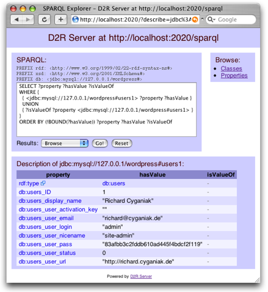

D2R Server provides SPARQL access to relational databases. It takes SPARQL queries from the Web and rewrites them via a D2RQ mapping into SQL queries against a relational database. This on-the-fly translation allows RDF applications to access the content of large databases without having to replicate them into RDF. D2R Server can be used to integrate existing databases into RDF systems, and to add SPARQL interfaces to database-backed software products.
D2R Server combines the D2RQ API and Joseki SPARQL Server to map a database's contents into a virtual RDF graph that can be accessed over the SPARQL protocol. It is bundled with a Jetty webserver.
Download D2R Server
v0.2 (alpha), released 2006-05-30News
- 2006-05-30: Version 0.2 released, including a script for auto-generating mapping files from DB schemas, and a web-based SPARQL browser for exploring the mapped data.
- 2006-05-25: D2R Server Demo at the 15th World Wide Web Conference (WWW2006); slides: D2R Server presentation (PDF)
Requirements
You need:
- Java 1.4 or newer on the path (check with java -version if you're not sure),
- a modern browser like Firefox, Opera or Safari to access the web interface. Internet Explorer will currently not work.
Installing and running D2R Server
Extract the archive into a suitable location. Optionally, add the extracted directory (where the d2r-server and d2r-server.bat files reside) to the path.
Download a JDBC driver from your database vendor. Place the driver's JAR file into D2R Server's /lib directory. A list of JDBC drivers from different vendors is maintained by Sun. Also take note of the driver class name (e.g. org.postgresql.Driver for PostgreSQL or oracle.jdbc.driver.OracleDriver for Oracle) and JDBC URL pattern (e.g. jdbc:mysql://servername/database for MySQL) from the driver's documentation. A driver for MySQL is already included with D2R Server.
Generate a mapping file for your database schema. Change into the D2R Server directory and run:
generate-mapping -o mapping.ttl -d driver.class.name -u db-user -p db-password jdbc:url:...Replace the parts in italics with appropriate values. mapping.ttl is the name for the new mapping file. -d can be skipped for MySQL.
Start the server:
d2r-server mapping.ttl
The SPARQL endpoint is at http://localhost:2020/sparql and can now be queried by SPARQL clients.
-
Testing the Server: Open http://localhost:2020/ in a web browser.

You can use the SPARQL form to execute queries and display results in a number of formats, or use the Browse box on the right to explore the endpoint's contents.

Customize the database-to-RDF mapping by editing the mapping file with a text editor. Its syntax is described in the D2RQ Manual. D2R Server will automatically detect changes to the mapping file and reload appropriately when you hit the browser's refresh button.
Pre-built mapping files
We collect mapping files for popular database-driven applications.
Have another one? Please share it.
Source code and development
D2R Server is hosted by SourceForge.net as part of the D2RQ project. The latest source code is available from the project's CVS repository and can be browsed online.
Support and feedback
You can contact us on the D2RQ mailing list at d2rq-map-devel@lists.sourceforge.net.